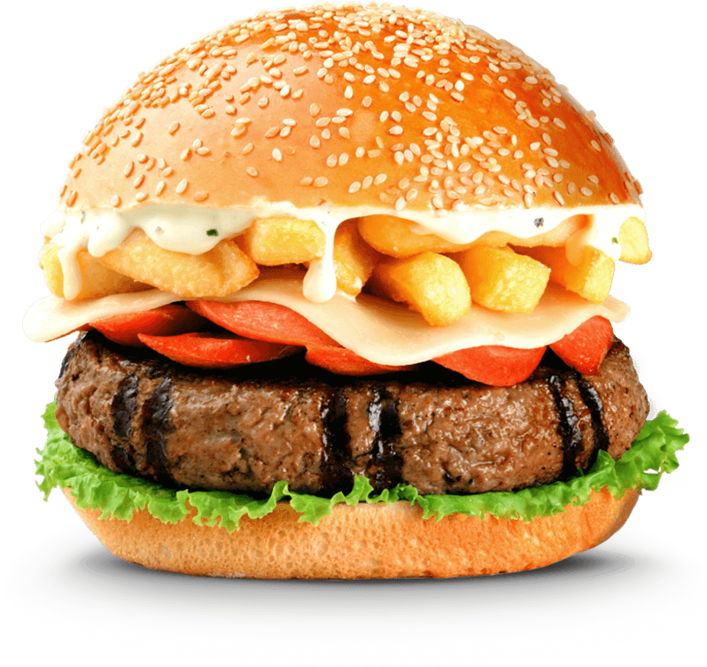

¿Cómo nacio BEMBOS?
En 1988 un par de jóvenes empresarios peruanos decidió incursionar en un mercado poco difundido hasta el momento en el Perú: el mercado de las hamburguesas.
En ese momento existían cadenas nacionales que ofrecían hamburguesas dentro de su menú, pero no se había desarrollado el hábito de consumo de hamburguesa en el público peruano ni habían llegado al país las grandes cadenas internacionales. Estos jóvenes empresarios no conocían el negocio pero les gustaban las hamburguesas y tenían muchas ganas y convicción en sacar adelante su proyecto.
Es así que el 11 de Junio de 1988 nació Bembos en un local alquilado del corazón de Miraflores y comenzaron a trabajar en su objetivo de preparar la mejor hamburguesa del Perú.
El éxito fue inmediato, pues además del excelente producto Bembos contaba con un ambiente divertido, una moderna decoración y un excelente servicio.
Debido a esta gran acogida, en 1990 se inaugura también con éxito sin precedentes el segundo local de Bembos en San Isidro, de allí en adelante el crecimiento sería constante.
Cuando las grandes cadenas internacionales de hamburguesas llegaron al Perú Bembos ya estaba posicionada en el mercado y la competencia los motivó a ser más innovadores y eficientes, logrando mantener el liderazgo en el mercado.
La mejor hamburguesa a la parrilla por su sabor único y sus creativas combinaciones a partir de insumos de la más alta calidad ofrecida en nuestros atractivos locales. Nuestro espíritu innovador y expresivo se manifiesta en nuestros productos, pero también en nuestros locales, la música, nuestro ambiente y servicios.
Después de muchísimas pruebas y degustaciones descubrieron las tres cualidades que debía tener la hamburguesa: fina carne de novillo (ganado vacuno de hasta 3 años), sazón agradable al exigente paladar peruano y que sea cocida al carbón
Cuando el producto fue aprobado, descubrieron las posibilidades de combinaciones que se podían lograr. Así nacieron las primeras hamburguesas especiales, hoy “de colección” como “La Francesa” elaborada con champiñones y queso, “la hawaiana” con piña, jamón y queso...y así múltiples combinaciones que han sido ofrecidas durante estos 20 años al público de Bembos para todos los gustos.
BEMBOS termina de consolidarse alcanzando el liderazgo en el mercado de hamburguesas frente a las cadenas internacionales, con aproximadamente el 50% de participación del mercado.